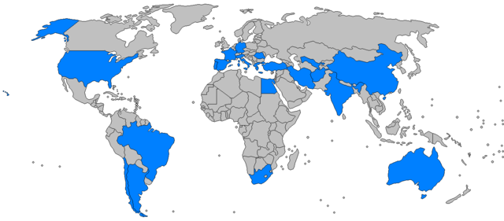

Grapes
A grape is a fruit, botanically a berry, of the deciduous woody vines of the flowering
plant genus Vitis. Grapes are a non-climacteric type of fruit, generally occurring in clusters.
Grapes
have played an important role in human nutrition, and have great cultural significance as well. The
cultivation of grapes started perhaps 8,000 years ago, in the Middle East, and the oldest known winery, in
Armenia, dates to ca. 4000 BCE, and they can be eaten fresh, they can be dried (as raisins, currants and
sultanas), and they can be used for making wine, jam, juice, vinegar, and other products.
Distribution and production
According to the Food and Agriculture Organization (FAO), 75,866 square kilometers of the world are dedicated to grapes. Approximately 71% of world grape production is used for wine, 27% as fresh fruit, and 2% as dried fruit. A portion of grape production goes to producing grape juice to be reconstituted for fruits canned "with no added sugar" and "100% natural". The area dedicated to vineyards is increasing by about 2% per year.
There are no reliable statistics that break down grape production by variety. It is believed that the most widely planted variety is Sultana, also known as Thompson Seedless, with at least 3,600 km2 (880,000 acres) dedicated to it. The second most common variety is Airén. Other popular varieties include Cabernet Sauvignon, Sauvignon blanc, Cabernet Franc, Merlot, Grenache, Tempranillo, Riesling, and Chardonnay.